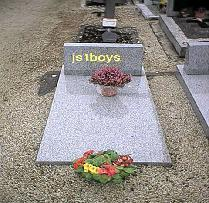

Forums galactiques > Assemblée Galactique : diplomatie officielle > Sondage sur le nouveau régime politique
Je suis très satisfait de ce nouveau régime | 7 | |
Je suis d'accord | 1 | |
Je suis d'accord mais apres quelques changements dans la constitution | 3 | |
Je ne suis pas d'accord, Je m'y oppose | 32 | |
Sans opinions | 14 | |
Total : 57 vote(s) | ||
Pages : 1 2
| Bob Brache Respect diplomatique : 411  16/12 ETU 13:47 | Score : 3 Détails "Et qué croyez-vous qué font Grosalen, Mighty Goat, et Hinata à part se battre chaque jour depouis qué cette histoire a commencé ? Ils reçoivent déjà, eux, les soutiens, et bénéficient d'oune certaine confiance alors qué vous êtes oune inconnu. Si vous voulez combattre lé Pôpe, lé mieux est dé voir avec eux cé qué vous pouvez faire."
| ||
| khornes Respect diplomatique : 287  16/12 ETU 14:16 | Score : 0 Détails C'est bien vrai.
Et si vous avez un doute allez voir dans le systeme 0. Juste un coup d'oeil... | ||
| JS1BOYS Respect diplomatique : -131  16/12 ETU 17:15 | Score : 1 Détails je suis dans le systeme 0
je ne veux pas de vos dons mais ne m'attaquez pas si j'arrive a prendre le controle puis je utilsez des ha ? | ||
| demon kyo Respect diplomatique : -3  16/12 ETU 21:25 | Score : -4 Détails bonjour!
moi j'aimerai savoir les objectifs que propose et defant le regime politique et son utilité dans la galaxi. j'aimerai ossi savoir qui est le representen officiel de se regime pour qu'il puisse m'expliqué son but. je ne veut pas critiqué loin de la je m'informe. merci. PS: desolé pour les fautes d'orthographe evantuel. | ||
| Bob Brache Respect diplomatique : 411 16/12 ETU 21:50 | Score : 2 Détails HRP:
"fautes d'orthographe evantuel", hé hé, c'est peu dire. Pas de critiques pour cette fois, mais je dois te dire que dans la taverne le HRP et les "fôtes" sont tolérées (sauf sujets RP), alors qu'elles ne le sont pas à l'Assemblée. - Le représentant : "Le Grand Pôpe" (c'est son nom exact pour le MP, enlève les guillemets). - Ce qu'il propose : Va lire le sujet "Important : Changement de régime politique". Mon explication de texte sur cette constitution est un peu plus bas dans le même sujet. - Son objectif : Je dirais faire du Pôpe un empereur, car à part ça... Mais lui aurait sans doute une autre opinion. - Son utilité : Cf. réponse précédente. Enfin, je dois préciser qu'il est loin de faire l'unanimité (cf. le sondage ci-dessus), que des contre-propositions existent, et que les combats font toujours rage... Cependant un cessez-le-feu est en cours de négociation... (cf. "Table des Négociations") | ||
| bis31 Respect diplomatique : 47 17/12 ETU 11:00 | Score : 0 Détails Reprenant les propos de Bob Brache, dont je salue noblement sa venue dans cette salle, le résultat de ce sondage est sans appel ! Il va falloir que cela change pour que l'opinion publique soit d'accord avec La Grand Pôpe !
A moins que ... cela ne soit trop tard ? | ||
| Le Grand Pôpe Respect diplomatique : 75 17/12 ETU 13:02 | Score : 4 Détails Je modifie en se moment la constitution fin que les points incoherent soulever par la majorité ne le soit plus,
J'ai engagé les discutions sur se sujet avec le commandant Hinata, trés prometeuse dans la rédaction des constitutions, En paralélle, les service diplomatique du consulat négocie un cessez le feu avec la Brigades Internationnal et l Alliance sur le systéme 0. J'ai bonne espoire que bientot le peuple choississent son propre régime, SOuhaitons nous bonne chance, Cordialement, Le Grand Pôpe | ||
| Bob Brache Respect diplomatique : 411 17/12 ETU 13:18 | Score : 0 Détails "Lé fait qué vous discutiiez avec la commandante Hinata en vue dé proposer oune nouveau traité constitoutionnelle est oune nouvelle qui mé réjouit lé coeur, Pôpe, ye vous remercie dé nous en faire part ici."
"Pouisque ye souis apparu comme oune détracteur actif dou Pôpe et dé sa politique, ye pense qu'il m'incombe dé dire devant l'assemblée qué mes propres relationnes avec lé Pôpe ont connu des progrès appréciables, pouisqu'à la souite d'oune escarmouche dans oune dé nos systèmes communs, oune cessez-lé-feu a été convenu entre nous. Ye reste bien entendu vigilant, méfiant même, et souit de près les tentatives de dialogue entre les deux parties. Mâ, force est dé reconnaître que les évolutions récentes sont favorables à la recherche d'oune pax galactica." | ||
| Le Grand Pôpe Respect diplomatique : 75 17/12 ETU 13:43 | Score : 1 Détails En effet,
La restructuration de la constitution est en train de se faire, J aiç demander l'aide d'Hinata, Je pense en effet que le sénat et l'empire sont conciliable pour notre agalxie, EN attendant la future proposition, je négocie un cessez le feu avec l Alliance et les Brigades, Merci de me laisser une chance, j'apprécie votre geste, COrdialement, Le Grand Pôpe | ||
| JS1BOYS Respect diplomatique : -131 17/12 ETU 16:58 | Score : -2 Détails comme tu as vu j'ai commencer les attaques et je ne m'arretterais pas jusqu'à le gouvernement tombe sur quoi je vous salut
| ||
| Maedhros Respect diplomatique : 296  17/12 ETU 17:44 | Score : 0 Détails Mais non!!
Tout le monde essaye de faire revenir la paix et se bourrin vas tout detruire.Tu n'a pas vus que dans toute les salles de conseil on essaye de negocier? Arrete imediatement tes attaques! | ||
| charlyon Respect diplomatique : 12  17/12 ETU 18:01 | Score : 0 Détails Allons, il faut arrêter de parler et plutot passer à l'action...
Cependant, il faut quand meme réfléchir avant d'agir, mais, hélas on ne bat pas un ennemi avec des paroles, mais on peut le tromper ou le blesser... | ||
| Janclodius Respect diplomatique : -54  17/12 ETU 18:38  | Score : 3 Détails Qu'avons nous fait de néfaste? Allez-y, citez! Rien! Nous avons enfin fait bouger les choses et dans le bon sens! Pourquoi nous accabler?
Vous feriez mieux de réflechir avant d'agir, car vous n'avez pas de raison valable! | ||
| Caliban Respect diplomatique : 111  17/12 ETU 18:48 | Score : 4 Détails Bouger les choses dans le bon sens ?
Pourrions nous avoir some examples ? Le commander Grand Pope a pris le pouvoir sans soutien de l'ensemble, and cela s'apparente à une action de dictateur. Il a exprimé, again and again, sa volonté d'être emperor, grand chef, or whatever. Il s'est imposé comme notre leader à tous. Il a proposé a constitution qui le mettrait en place de régner sur cette galaxy sans possible opposition, avec cet histoire de chambre des lords and all. But il semble que, 'cause of les brigadists qui se sont opposés avec violence, le commander Grand Pope redevienne a bit diplomat. Pas besoin d'un illuminé proclamant sa superiority and imposant sa loi. Les discussions with comanderess Hinata pourraient aboutir sur une paix and un project d'entité dirigeante. Wait & see ... | ||
| bloodywizard Respect diplomatique : 126 17/12 ETU 18:57 | Score : 2 Détails Une série de tableaux apparurent sur l'écran central... Le commandant Bloodywizard se leva et attendit que le silence se fasse dans la salle avant de prendre la parole :
" J'ai effectué un étude générale du texte de cette constitution. Dans un premier temps, il est évident que cett proposition trouve son inspiration dans différents textes constitutionnels qui furent en vigueur dans la Galaxie 0. Cela encourage donc à sa crédibilité. Cependant, j'ai relevé un certain nombre incohérences dans le texte lui même... Primo, le terme de constitution n'est pas adapté à ce texte, car il implique un régime démocratique. Or l'une des deux chambres qui se partagent les pouvoirs législatifs est nommé par une seule et même personne,ce qui s'approche d'un régime dictaturial. Segondo, concernant le rôle de l'empereur... Il est dit dans le 5ème Amendement, il est dit que l'Empereur est avant tout une entité symbolique. Pourtant, le 7ème Amendement lui donne le pouvoir judiciaire, ce qui, ajouté au pourvoir exécutif qu'il contrôle (cf 10ème Amendement), lui donne 2 des 3 pouvoirs majeurs. Je vous passerai tous les pouvoirs nominatifs que possède l'Empereur, ce qui fait de ce texte un belle dictature déguisée. Pour tout cela, je suis contre ce projet. Même si l'effort était louable, qui que soit l'Empereur, il disposerait d'un pouvoir trop important pour une seule personne. Je dois avouer qu'il constitue pourtant une bonne base pour un autre projet réellement constitutionnel, qui, si j'ai bien compris, est en cours d'élaboration, j'ai hâte de pouvoir l'examiner..." Le Commandant se rassit, et l'obscurité se fit dans la salle. | ||
| tito Respect diplomatique : 297  17/12 ETU 19:08 | Score : 2 Détails // le commandant tito se leva , regarda l'assemblée qui se demandait ce qu'il allait dire//
Personnelement je pense que les choses vont trés bientot bouger . //un sourire s'esquissa sur son visage // Je doit vous quitter nobles commandants de cette assemblée , j'ai une affaire de haute importance a traiter au plus vite , aussi Youffie mon assistante e fera un plaisir de garder le contacte entre moi et cette assemblée . //une jeune fille s'approcha et salua les commandant // Avant de partir , j'aimerai remercier Pope de ne pas m'avoir attaqué pendant cette guerre . bien a vous // le commandant , le pas assuré se dirigea vers son vaisseau dans un calme absolu // | ||
| Le Grand Pôpe Respect diplomatique : 75 17/12 ETU 19:16 | Score : -2 Détails Votre sourir ne me présage rien de bon commandant Tito,
Dois je m'inquiter ou suis je parano? Quand au projet, EN effet 2 des 3 pouvoire était entre les main de l'empreur, mais il en était de même pour les chambres, Sachez que les modification que j apporte séparent complétement le judiciaire du Legislatif et de l Exécutif, une prochaine consitution vous sera proposé trés prochainement!!! | ||
| tito Respect diplomatique : 297 17/12 ETU 19:16 | Score : 1 Détails // apres que le commandant tito soit parti , la jeune fille pris place au sein de l'assemblé//
Et ben alors , vous avez jamais vu une jolie fille de votre vie ou quoi ?! allez ! au boulot molasson , *murmure* Ah, ces hommes ! . | ||
| Maedhros Respect diplomatique : 296 17/12 ETU 19:32 | Score : 0 Détails Mais si on a vue Hinata et d'autres
*murmure*mais je prefere Hinata *Fort*Bien je crois que tout a été dis sur se constitution et bien quelle soit pieger,ce fut une bonne chose de faites et j'attend celle sue vous faites avec hinata. Merci de ces efforts Pope. |
Pages : 1 2
Forums galactiques > Assemblée Galactique : diplomatie officielle > Sondage sur le nouveau régime politique